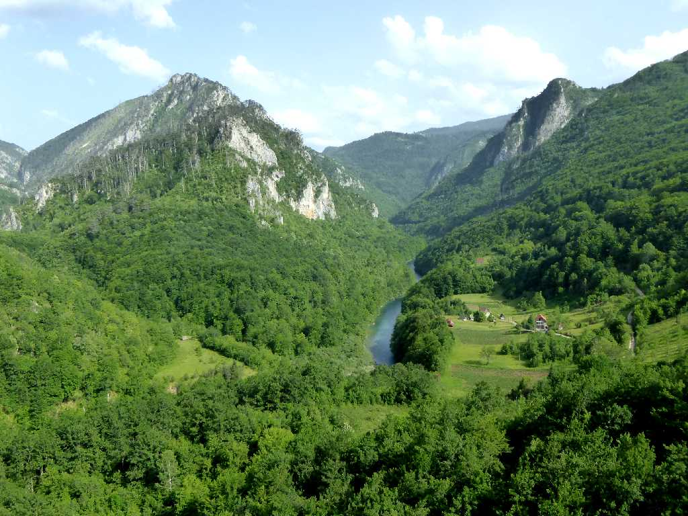
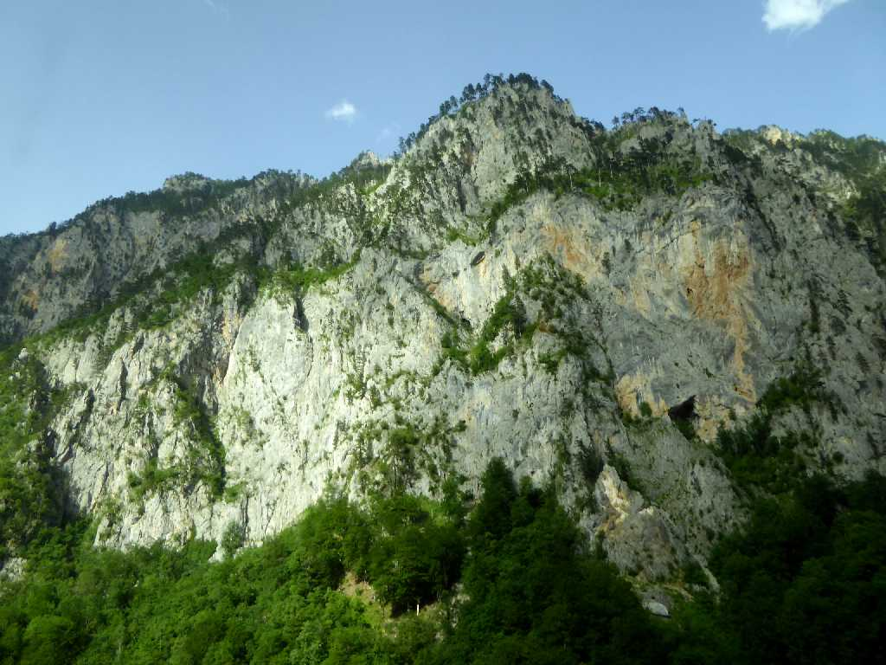
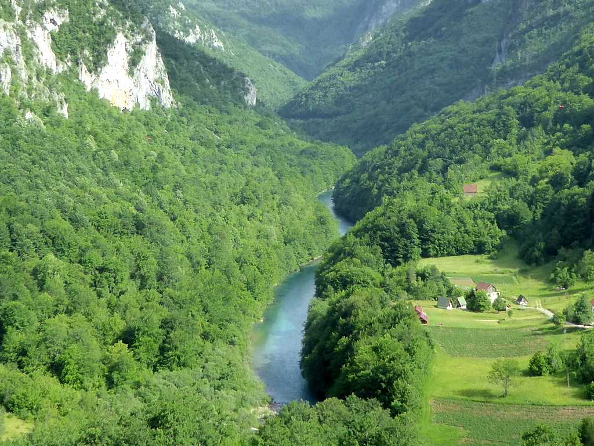
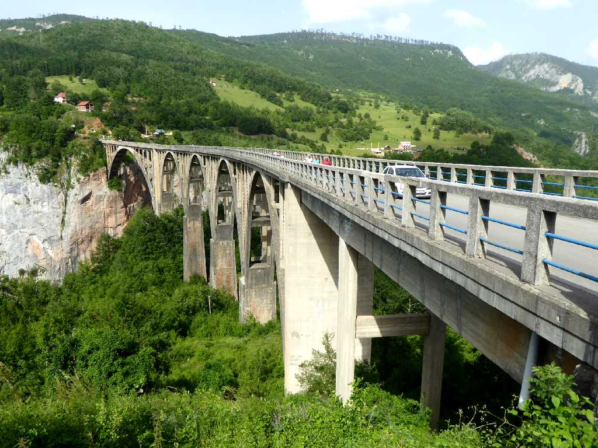
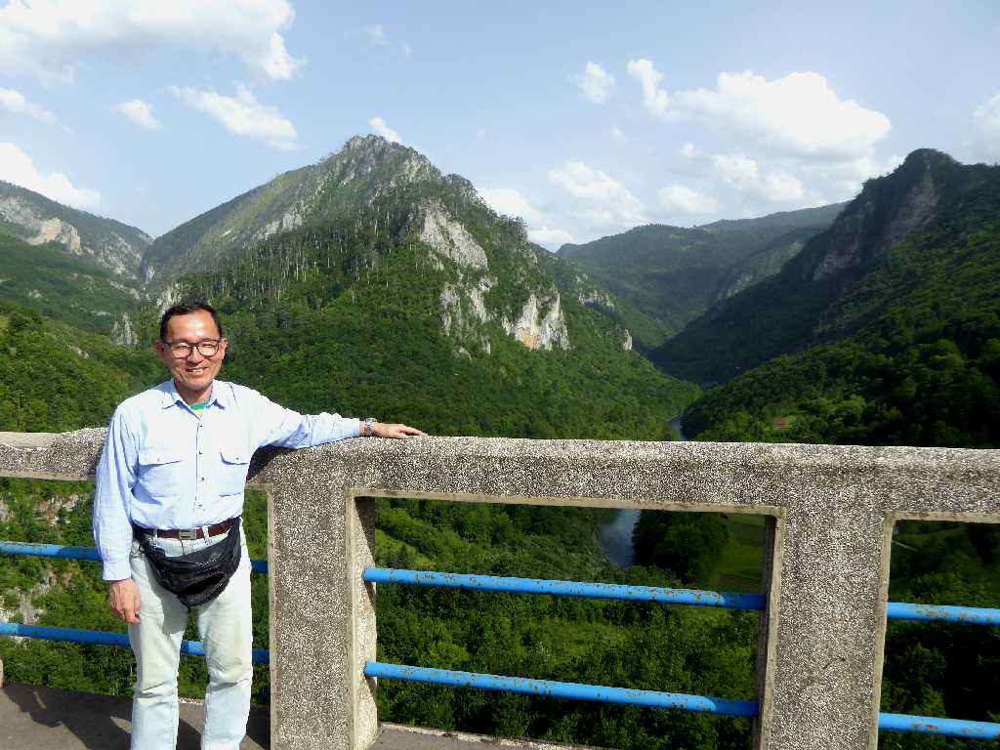

Tara River Canyon Durmitor National Park
ドゥルミトル国立公園のタラ川峡谷は長さ８２ｋｍ深さ１,３００ｍあるヨーロッパ最大の峡谷でアメリカのグランドキャニオンに次ぐ世界第二位の峡谷

Tara River Tara River Canyon
２００６年セルビアから独立した国名のモンテネグロは黒い山を意味する

Tara River Tara River Canyon

Đurđevića Tara Bridge Tara River Canyon
ジャブリャクのタラ橋

June 18 2016 Đurđevića Tara Bridge